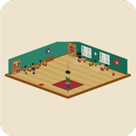

Ninguém aprova o próprio trabalho
Toda entrega passa por uma verificação do seu projeto, rodada por fora. “Terminei” sem verificação verde não é aceito.

Hive BaixarO Hive transforma o Claude Code que já está no seu computador numa equipe inteira: um gerente que planeja, especialistas que trabalham ao mesmo tempo, e um escritório 3D onde você vê quem está fazendo o quê. Quando alguém trava, ele para e pergunta em linguagem simples.
No Linux, o instalador serve para Ubuntu, Debian e Mint. Outra distribuição? Baixe o AppImage.
Por enquanto há instalador para Windows e Linux. No Mac, dá para rodar a partir do código no GitHub.
Gravação real do app. Cada personagem é um agente; a lateral conta, em português, o que está acontecendo.
Por décadas, construir software exigiu ler código. Agora você só precisa saber o que quer. A equipe planeja, trabalha, confere e, quando tem dúvida, pergunta para você.
Em palavras normais, como pediria para uma pessoa. Não precisa saber o nome de nenhuma tecnologia.
Ele divide o trabalho em passos e escolhe quem faz o quê. Nada encosta no seu projeto antes do seu “pode começar”.
Cada agente numa cópia separada do projeto, para um não atrapalhar o outro. Você acompanha tudo no escritório.
“Terminei” não basta: o próprio projeto roda as verificações. Só o que passa entra, e confere de novo depois de juntar.
Em vez de tentar às cegas e gastar seu dinheiro, a equipe para e faz uma pergunta que qualquer pessoa consegue responder.
Deixar IA mexendo sozinha no seu projeto assusta com razão. O Hive foi construído em volta de regras que não se negociam.
Toda entrega passa por uma verificação do seu projeto, rodada por fora. “Terminei” sem verificação verde não é aceito.
Sem mensagem de erro técnica na sua cara. O detalhe existe, atrás de um clique, para quem quiser ver.
Dois agentes nunca mexem na mesma pasta. Juntar o trabalho é um passo à parte, com conferência.
Estourou o combinado, ele para e pergunta. Nunca fica rodando às cegas na sua conta.
Clique num personagem e veja quem ele é, que modelo usa e quanto já gastou.
O Hive não tem servidor próprio nem pede sua senha: ele dirige o Claude Code que você já instalou e já usa, com a sua conta. Cada passo fica gravado, e dá para rever uma execução inteira depois.
A mesma mudança num projeto real, feita pelo Hive no modo econômico, contra pedir direto para a linha de comando do Claude Code. E a do Hive ainda passou por verificação automática antes de entrar.
Uma medição, numa tarefa pequena. Método e números crus: BASELINE.md no GitHub. Em tarefas planejadas pelo gerente o resultado muda, e está tudo lá também.
O Hive ainda é novo e não tem assinatura digital, então o sistema pode mostrar avisos no caminho. Eles são esperados, e é assim que você passa por eles.
É a IA que o Hive coordena. Como instalar. Depois abra uma vez e entre com sua conta.
Para cada agente ter sua própria cópia do projeto. Baixar o Git.
O navegador pode dizer que o arquivo “não costuma ser baixado”. É só porque o Hive é novo. Clique em Manter.
A tela azul do Windows aparece para programas sem assinatura digital. A instalação dura segundos e não pede senha de administrador.
O Hive encontra o Claude Code sozinho e pergunta se pode usá-lo. Você autoriza uma vez, escolhe a pasta do projeto e descreve o que quer.
É a IA que o Hive coordena. Como instalar. Depois abra uma vez e entre com sua conta.
Quase sempre já vem instalado. Se o Hive disser que falta, abra o Terminal e digite sudo apt install git.
Serve para Ubuntu, Debian, Linux Mint e Pop!_OS. Usa outra distribuição? Veja o AppImage logo abaixo.
A loja de aplicativos do sistema abre e pede a sua senha, porque o Hive é instalado para o computador todo. Se o arquivo abrir em outro programa, instale pelo Terminal: sudo apt install ./Hive.deb (na pasta Downloads).
Procure “Hive” nos seus aplicativos. Ele encontra o Claude Code sozinho e pergunta se pode usá-lo. Você autoriza uma vez, escolhe a pasta do projeto e descreve o que quer.
Outra distribuição (Fedora, Arch, openSUSE…)? Baixe o Hive.AppImage, que roda sem instalar. Clique nele com o botão direito, abra Propriedades, ligue Executável como programa e abra com dois cliques.